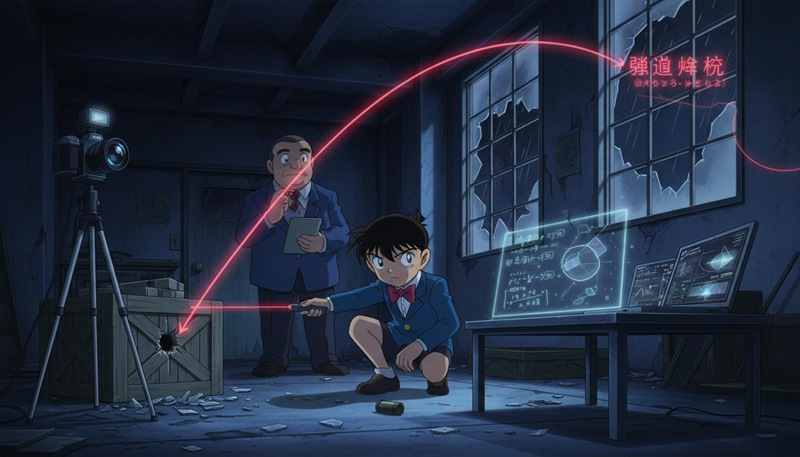

返回课程列表
第一课
绪论
动漫中的物理学世界
⏱️ 约30分钟
日本动漫中充满了物理学元素。《石纪元》直接以科学为主题，《名侦探柯南》的推理涉及大量物理知识，《进击的巨人》的立体机动装置是力学的完美应用。
科学番中的力学
越来越多的动漫以科学为核心主题。《石纪元》展示了从零开始重建文明的科学过程，《Dr.STONE》中的每一个发明都有真实的科学基础。

动漫中的力学元素
经典动漫的力学内容：
- 《石纪元》：千空用滑轮组、杠杆、弹簧等简单机械重建文明
- 《名侦探柯南》：案件推理经常涉及弹道分析、坠落计算等力学知识
- 《进击的巨人》：立体机动装置利用钢索和气体推进实现三维机动
- 《少女与战车》：坦克的射击弹道、装甲防护都涉及力学计算
战斗番的力学夸张
战斗番中的力学往往被极度夸张，但理解真实的力学原理后，能更好地欣赏这些夸张的创意，也能发现其中的物理Bug。
战斗番的力学分析
用力学眼光看战斗番：
- 《龙珠》：悟空的龟派气功如果是真实能量束，威力相当于核弹
- 《一拳超人》：埼玉一拳的力量如果真实存在，冲击波会摧毁整座城市
- 《我的英雄学院》：All Might的底特律粉碎产生的气压变化可以改变天气
- 《鬼灭之刃》：日轮刀的斩击速度如果超过音速，会产生音爆